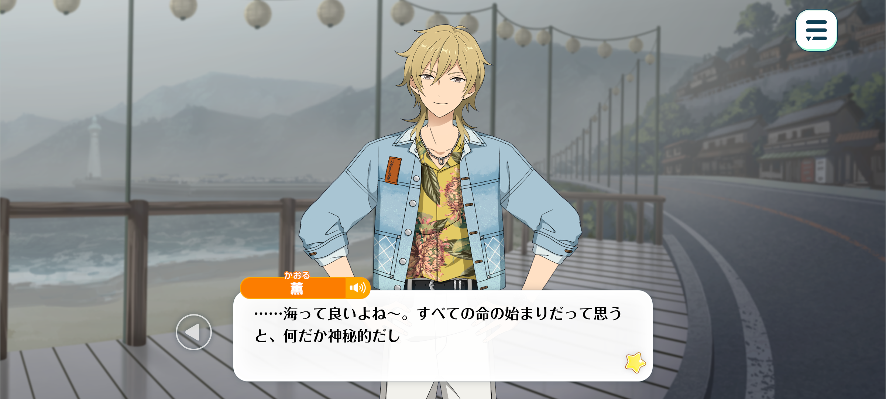
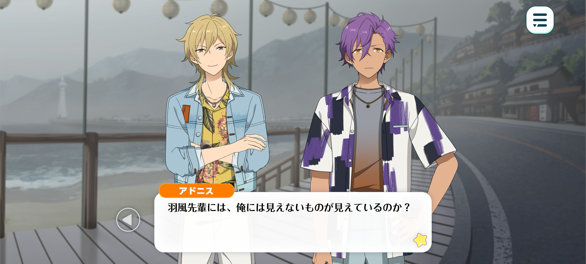
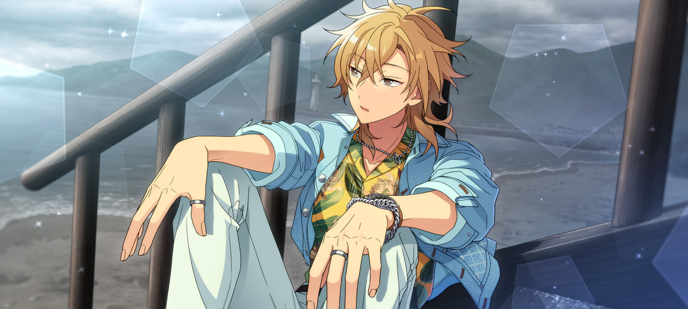
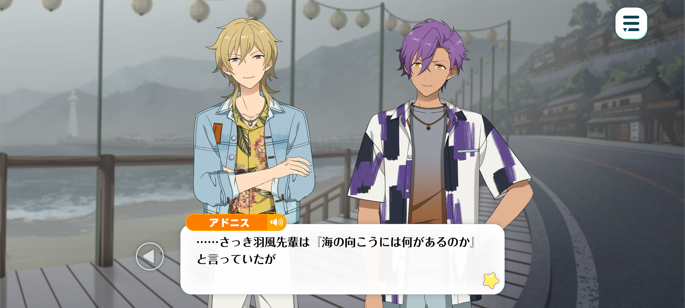
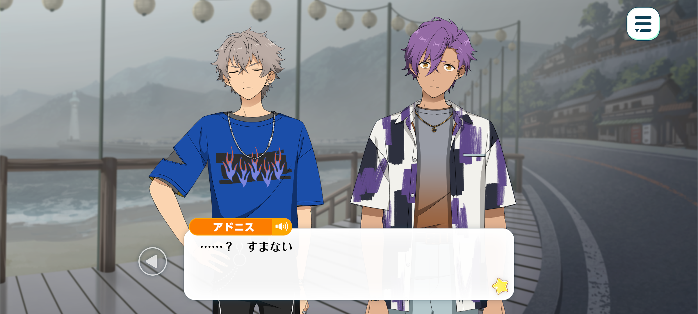

Velvet Ship
Prologue


Time: June, two years since ES’ establishment
Location: In some port town

Kaoru: ...The ocean’s great, isn’t it? All life started here, apparently. Kinda mysterious when you think about it.
Whenever I look at the sea, I end up thinking about how there’s this whole other world right in front of us. A world that’s completely different to our own.
It’s kinda funny. How the only thing separating the two is something we call “waves”.
You can cross that boundary so easily. Just a few steps into the water is all it takes. But even if you only go a little way in, humans can’t breathe. We’d drown.
It’s such a clear dividing line between two completely different worlds.
And that’s just what we can see from the surface. There have gotta be so many creatures down there that we’ve never even seen before.
Especially deeper down, where humans haven't explored yet. I wonder what lives down there. I can’t even imagine what some of those creatures must look like.
We’ve got all this amazing technology, and with the internet, you can get this feeling that there’s nothing left in the world that we don't know about. But then, you look at the ocean and realise… we’ve barely scratched the surface. The very thing that’s been surrounding us this whole time.
But it’s not just the ocean, either. There’s probably loads of things about the world that we haven’t even thought to explore yet.
I think that’s part of the reason I like looking out to sea. It reminds you that humans are pretty small, ya know? In the grand scheme of things, at least.
What lies beyond the shore? What kind of countries? What kind of people and cultures?
You could probably sit here and wonder about it for hours.
I don’t know. Looking at the endless horizon like this makes all my worries feel kinda small.

Adonis: ...You talk about what lies beyond the sea. But the fog is so thick today that I can’t even see the horizon.
Are you seeing something that I cannot, Hakaze-senpai?
Surely. You know much more about the ocean than me. You can probably sense something that no-one else can.
You’re amazing, Hakaze-senpai.
Kaoru: Woah, Adonis-kun? Could you not analyse then praise me with such a straight face?
I’m just sort of... trying to escape reality, I guess.
Adonis: Escape reality?
Kaoru: Yeah. I mean, look at us. We’ve been stuck here for what, three whole days now?
We came all this way to this port town for a fan appreciation event, and yet...

The fog’s too thick for the boats to leave, so we can’t even get to the island it’s being held on. We’re just stuck around waiting for now.
And it doesn’t look like the fog's gonna clear up anytime soon, so we’re probably not even gonna make it in time for the job...
So there’s not much else we can do. I figured I might as well think about the ocean to pass the time.
Adonis: ...I see.
I was under the impression that this was a serious conversation, so I thought there was some deeper meaning behind your words.
Kaoru: Ahaha. No, nothing like that... How about you, Adonis-kun?
Adonis: Me? Let’s see... I think the first time I really became aware of the ocean was when I came to Japan.
When I went to that beach in the south for work, I remember thinking the ocean was beautiful.
Although, during Pirate Fes, I did not have much time to appreciate it.
Kaoru: Ah, Pirate Fes... Now that you mention it, we did do that, didn’t we...
Adonis: Did you forget?
Kaoru: Ahaha, no, I remember it well. I was the Captain because Rei-kun couldn’t handle the heat. And you were the ‘rare beast’ we captured on that mysterious island, right…?
It’s not that I forgot or anything. I just didn’t expect you to bring it up like it happened yesterday.

Adonis: I see... UNDEAD is extremely dear to me, so I remember everything very clearly.
...Early, you asked “what lies beyond the shore?”
I wonder that too. Although, it’s a little difficult to imagine that today, since the fog is so dense…
But, looking at the sea reminds me of my hometown. After all, there’s a great deal of water that separates Japan from my country.
For me, the ocean is also intimately connected to my work as an idol. Like Pirate Fes, and lives we’ve performed in tropical locations.
I remember the scenery, and the time I spent with my friends very vividly.
The sound of waves crashing upon the beach, the smell of the sea breeze, the warm sunlight on my skin…All those sensations are tied to my memories. When I think of those times, I become overwhelmed with emotions.
Kanzaki taught me the beauty of the ocean, and you taught me what lies beneath it.
To some, the ocean may not be something they think of often.
But now... I, too, love the sea.

Koga: ...Oi. How long are you morons gonna keep yappin’ about the ocean?
It’s embarassin’ hearin’ you two talk. Makin’ my skin crawl.
Adonis: Embarrassing? Which part was embarrassing?
Koga: I'm not repeatin’ it!
Adonis: ...? I’m sorry.
Koga: Why’re you apologisin’! You’re supposed to be a man!
Kaoru: Ahaha. “Ferocious monster Koga-kun” is quite the handful, isn’t he?
Koga: Who’re you callin’ ferocious!? You’re a piss take... Seriously, when’s this fog gonna clear up!?
Kaoru: Reeeel it in, Koga-kun~. Barking and whining isn’t going to magically change the weather.
Koga: You’re way too damn calm, Hakaze-senpai! If you’ve got time to sit around daydreamin’, how about you daydream us a way out of here! Jesus, man…
Kaoru: A way out of here? That’s a tall order. And don’t call me Jesus, I’m not that powerful.
Besides, Rei-kun told us to sit tight. He’ll figure something out, I’m sure of it.
Koga: Tch...
I don’t like waitin’... Hurry up ‘n come back, Sakuma-senpai!